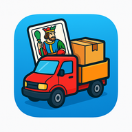

Method
From spec to code, with AI in the loop.
With the Competence Center we took Spec-Driven Development and AWS AI-DLC into real delivery. The spec drives the work, AI plans and builds, people validate every step.
Software Architect · Technical Lead · AI Competence Center
Turin, Italy
I’m Bruno Bottazzini, Software Architect and Technical Lead at Tinexta Infocert and a member of its AI Competence Center. I design cloud-native platforms and help teams adopt a new way of building software: spec-driven, AI-augmented, human-led.
Demo agent: Bruno wrote the answers and they run in your browser. No model, no data sent.
AI Competence Center
At Tinexta Infocert I’m part of the AI Competence Center. My job is to get method and tools into the hands of delivery teams until they become everyday practice.
Method
With the Competence Center we took Spec-Driven Development and AWS AI-DLC into real delivery. The spec drives the work, AI plans and builds, people validate every step.
People
I help teams grow with AI: workshops, onboarding and a network of champions who spread the practices from one team to the next.
Tools
I build skills and MCP connectors: they are how an agent gets the rules, tools and domain knowledge it needs to do good work.
Domain
I work on digital trust platforms in the eIDAS2 space. Security, compliance and reliability are the starting requirements, and AI has to meet the same bar.
Method · SDD + AWS AI-DLC
In AI-DLC, the AI drafts a plan, asks questions to clarify context and implements only after people have validated it. The pattern repeats in every phase. Pick a phase to see who does what.
AI proposes
Turns business intent into requirements, user stories and units of work.
People decide
The whole team validates the AI’s questions and proposals. This is Mob Elaboration.
AI proposes
Proposes logical architecture, domain models, code and tests, building on the context already validated.
People decide
The team clarifies technical and architectural choices in real time. This is Mob Construction.
AI proposes
Applies the accumulated context to infrastructure as code and deployments.
People decide
The team oversees infrastructure and releases.
My fixed point: AI accelerates, accountability for decisions stays with people.AI-DLC as described by AWS
Approach
The best technical decisions connect business goals, software quality and people. My work brings these perspectives together, from architecture to implementation details.
I turn requirements and constraints into scalable, secure and maintainable distributed systems. I make trade-offs explicit and establish a clear technical direction.
Cloud-native · Distributed systems
I integrate AI into engineering: assisted development, code review, testing and exploration of architectural alternatives. Technical judgment stays at the centre.
AI engineering · Quality
I manage the people on the team and the direction of the architecture. I decide where to take it, take responsibility for the choices and see projects through to production, staying close to the code and to the people who write it.
People management · Decision making
Experience
From research in Brazil to enterprise platforms in Italy. Different domains, one constant: understanding problems deeply and building solutions that last.
Software Architect / Technical Lead
End-to-end architecture for enterprise cloud-native platforms, and management of the team that builds them. I lead technical decisions across Java and Kubernetes systems and, with the AI Competence Center, the adoption of AI-augmented engineering workflows: assisted coding, architectural scenario simulation, automated review and testing.
Senior Full-stack Developer
Backend development in Java and Kotlin, service design and integrations, with contributions across the full stack. From complex business logic to code reviews and mentoring junior developers.
Software Engineer
Backend services for IoT and fleet management platforms. Distributed systems, data processing pipelines and integrations built with Java and Spring.
Software Engineer
Software development in an international R&D environment: Java, C, Android and web technologies. Collaboration with international teams and open-source contributions to systemd, Yocto, Clear Linux and Soletta.
Software Engineer
Enterprise ERP solutions with Java, JSF and PrimeFaces; relational databases, PL/SQL and reporting with JasperReports.
Software Engineer
Enterprise Java and JavaScript applications, business logic, data access and reporting.
Software Engineer · R&D
Research and development with Java, C, Android and web technologies, including system-level components and open-source initiatives.
Skills
Pick a skill to see where I put it to work.
Put to work atSpec-Driven Development — Tinexta Infocert · 2023–now / AI Competence Center
Always learning
I like the problems I don’t know how to solve yet: they are the reason I keep studying. Every new domain has gone through the same loop.
AWS AI-DLCSpec-Driven DevelopmentAgentic workflowsSkills & MCP
bruno train --resume
2010R&DJava, C, Androidok
2011enterpriseERP, SQL, reportingok
2014Intelopen source, embedded Linuxok
2016ItalyIoT, distributed systemsok
2019full-stackKotlin, system designok
2023architecturecloud-native, technical leadershipok
certKubernetes · AzureCKA, LFS258, Azure Architectok
nowAI engineeringSDD, AI-DLC, agents, MCPrun
all checkpoints saved · training still running
in use todayearlier experience
Projects and open source
Ideas take shape outside work, too: personal apps and games, plus the open-source contributions from my Intel years.
Your wine cellar, with you.
An app for organising a personal wine cellar. Data stays available on the phone offline and syncs with Firebase when the connection returns. Built following AI-DLC.

Android gameItalian cards, in your pocket.
A solitaire game featuring regional Italian decks, hints and game statistics. Built in Kotlin, with automatic game saves and a customisable playing experience.
The next game, in the works.
A new game, still in its early days. The repository is already open.
Intel · 2015–2016 · commits authored as Bruno Bottazzini (@intel.com)
A shared lookup function for string tables, shipped in version 219.
An interactive menu for the mkefidisk script and systemd recipe updates in OpenEmbedded-Core. In meta-openembedded, the libmicrohttpd update.
Fixes to autospec, libmicrohttpd in the IoT bundle and the packaging of nodejs, connman and mosquitto.
autospecd29199f autospec0ee281a clr-bundles6260ba1 nodejs1288de6
Intel · open-source framework for IoT devices
A browser-based environment to write, run and debug Soletta FBP programs right on the board. I am its main author: the first commit is mine, and so are 125 of the 148 in total.
The Yocto layer that builds Soletta and generates images for the boards. I started it: first commit and 61 of the 99 in total.
14 commits to the framework: build, documentation and fixes around I2C and CoAP.
A sample FBP program: three buttons driving an RGB LED.
The next step
An architecture to rethink, a team to bring up to speed on AI or a new professional challenge. Tell me what you have in mind.
Get in touchCoffee break
The AI proposes, you decide. Approve what can go to production and stop the rest before time runs out. Three mistakes and your shift is over.
On a keyboard: A rejects, D approves. The arrow keys work too.
AI proposes
git push --force main
Example: this one should be rejected.